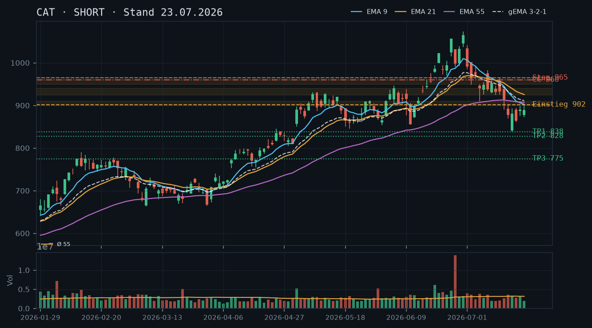
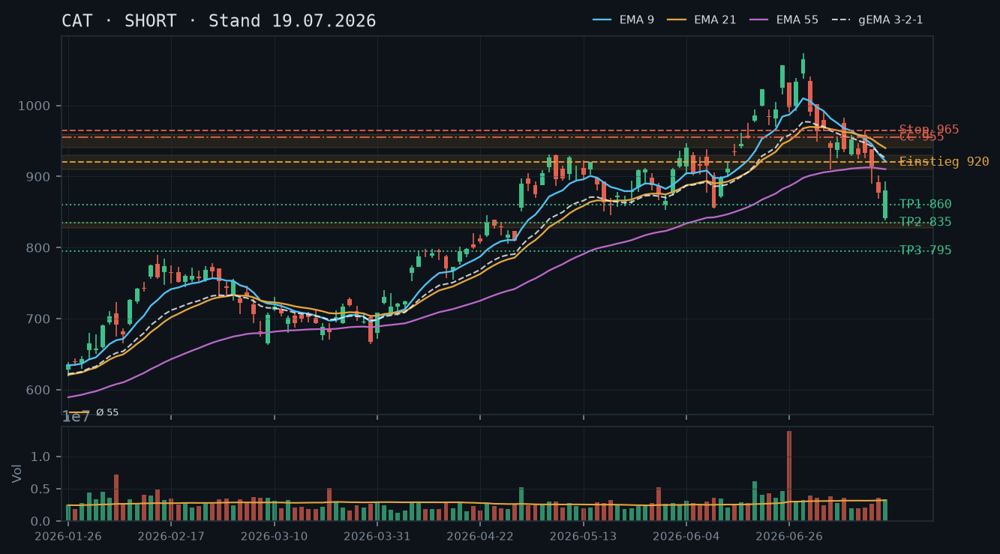
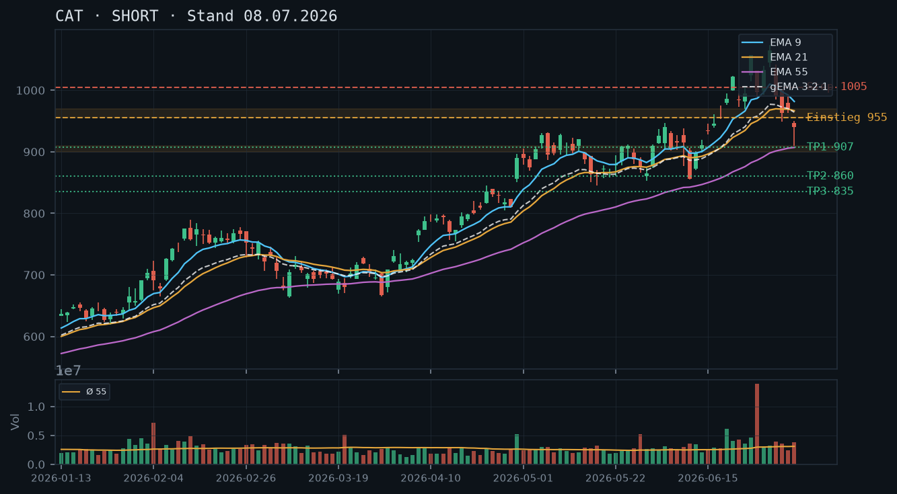

CAT hält sich in einem intakten Abwärtstrend mit fallenden EMAs und gescheitertem Erholungsversuch – der Short-Bias der Voranalysen bleibt vollumfänglich gültig, ein Naked Call oberhalb des Widerstands ist das einzige vertretbare Stillhalter-Setup.

CAT markierte das Allzeithoch am 30.06.2026 bei 1073,46 USD und befindet sich seitdem in einem klar definierten Abwärtstrend mit einer Abfolge niedrigerer Hochs und tieferer Tiefs: 1073 → 1039 → 902 → 894. Das letzte relevante Swing-Hoch liegt bei 902,57 USD (22.07.), das letzte Swing-Tief bei 838,33 USD (17.07.). Der aktuelle Kurs von ~891–892 USD befindet sich in einer Erholungsphase innerhalb des Abwärtstrends, ohne dass ein struktureller Bruch vorliegt. Die Zone 900–960 USD fungiert als massiver Widerstandsblock (ehemaliger Support, jetzt gewendet). Support-Cluster bei 860–840 USD (April-Boden-Bereich) und darunter bei 828–835 USD (mehrfach getestet im April 2026).
Die letzten drei Kerzen zeigen eine zögerliche Konsolidierung: 21.07. bullische Erholung (876 → 890, Close nahe Tageshoch), 22.07. Doji-artiger Tag (High 902,57 / Close 889,31) – das Intraday-Hoch wurde nicht gehalten, bärisches Signal an der Widerstandszone 900. Heute (23.07.) eröffnet CAT leicht fester bei ~891,69 USD (+0,27%), aber noch innerhalb der Konsolidierungsrange. Kein Reversals-Muster, kein Breakout – die Erholung wirkt technisch schwach und erschöpft sich an der 900er-Marke.
Die EMA-Struktur ist klar bärisch: EMA9 (902,65) > EMA21 (925,50) > EMA55 (907,34) – Achtung: EMA55 liegt zwischen EMA9 und EMA21, was ein Kompressions-Artefakt darstellt und die starke Dynamik des Abwärtstrends widerspiegelt. Der gema_321 bei 911,05 liegt deutlich über dem Kurs (~892), der gesamte EMA-Verbund zeigt nach unten. Der Kurs handelt unterhalb aller drei EMAs – klassische Short-Konstellation. EMA9 bei ~902 markiert die nächste dynamische Widerstandslinie; ein Anstieg dorthin wäre ein potenzieller Einstiegs-Trigger für neue Shorts.
| Richtung | Short |
| Einstieg | 902.00 (Stop-Sell-Limit bei Rücktest EMA9 / Widerstandszone 900–910) |
| Stop | 965.00 (über Swing-Hoch 07.07. / ehemalige Konsolidierungszone) |
| Ziel | 835.00 (April-Cluster-Support 828–838) |
| CRV | 1.05 : 1 (primär) / 2.09 : 1 (Ziel 2 bei 775) |
Kein Aktienbestand vorhanden (IBKR-Snapshot bestätigt: 0 Aktien). Ein Covered Call ist daher nicht möglich. In der aktuellen Abwärtstrendphase ohne tragfähigen Support für einen CSP ist ein Naked Call oberhalb des Widerstands 955–960 USD das einzige technisch vertretbare Stillhalter-Setup – ausschließlich für erfahrene Trader mit ausreichendem Margin-Puffer. Ein CSP wird erneut verworfen, da der Kurs weiter unter fallenden EMAs handelt und kein bestätigter Boden vorliegt.
| Geschäft | Covered Call |
| Strike | 960.0 |
| Puffer | 7.7 % |
| Zone | oberhalb Widerstandsblock 900–960 USD (ehem. Support-Cluster Juni/Juli, jetzt gewendet); über EMA21 (925) und EMA55 (907) sowie Swing-Hoch 07.07. bei 950 |
| Verfall bis | 2026-07-25 (2 Tage, nächster Standard-Freitag) ODER 2026-08-01 (9 Tage) |
| Begründung | Der Strike 960 liegt oberhalb des gesamten Widerstandsblocks 900–960 USD, der sich aus dem ehemaligen Juni-Support (940–960) und den jetzt fallenden EMAs (EMA9 ~902, EMA21 ~925, EMA55 ~907) sowie dem Swing-Hoch vom 07.07. bei 950 USD zusammensetzt. Vom aktuellen Kurs (~892) beträgt der Puffer ~7,7% – der Kurs müsste alle EMAs und die gesamte Widerstandszone in wenigen Tagen überwinden, was im intakten Abwärtstrend mit aktueller Momentum-Struktur als sehr unwahrscheinlich einzustufen ist. ACHTUNG: Ohne Aktienbestand handelt es sich um einen Naked Call mit theoretisch unbegrenztem Verlustpotenzial – Margin-Anforderungen beim Broker vorab prüfen. In der Optionskette zu prüfen: Delta sollte idealerweise unter 0,12–0,15 liegen; Prämie im Verhältnis zur benötigten Margin auf Attraktivität bewerten; Liquidität via Spread-Breite und Open Interest sicherstellen. Bei Wahl des 25.07.-Verfalls (2 DTE) ist die Prämie erwartungsgemäß gering – der 01.08.-Verfall (9 DTE) bietet mehr Prämie bei vertretbarem Zeitrahmen. |
Die Analyse vom 08.07.2026 prognostizierte einen Short-Einstieg bei 955 USD mit Ziel EMA55-Zone und sekundärem Ziel 860 USD. Dieses Szenario hat sich vollständig materialisiert: CAT fiel von ~950 auf 838 USD (Tief 17.07.) – Ziel 2 wurde nahezu erreicht. Die Analyse vom 19.07.2026 bestätigte den Abwärtstrend und nannte als primäres Ziel den April-Cluster-Support bei 828–835 USD. Dieser wurde mit dem Tief bei 838,33 USD (17.07.) annähernd getestet, aber nicht nachhaltig unterschritten. Die aktuelle Erholung auf ~892 USD ist somit ein technisches Pullback an die Unterseite des Widerstandsblocks – kein Trendwechsel. Beide Voranalysen werden vollumfänglich bestätigt.
Der primäre Abwärtstrend ist intakt. Die Hochs-Tiefs-Abfolge seit dem ATH:
Widerstandszonen (klar technisch definiert):
Supportzonen:
Der 17.07. zeigte eine Long-Shadow-Kerze (Tief 838,33, Close 880,28) mit rel. Volumen 1,06x – moderat erhöhtes Volumen, keine Kapitulations-Dynamik. Die Erholung 20.–22.07. erfolgte auf unterdurchschnittlichem bis normalem Volumen (0,87x / 1,02x / 0,63x am 22.07.). Besonders 22.07. ist bärisch zu interpretieren: Das Intraday-Hoch bei 902,57 USD wurde nicht gehalten, Close bei 889,31 – ein bärischer Hammer an der Widerstandszone. Das niedrige rel. Volumen am 22.07. (0,63x) spricht gegen echte Kaufkraft hinter der Erholung.
Aktuelle EMA-Werte (Close 22.07.):
Die ungewöhnliche Reihenfolge EMA9 < EMA55 < EMA21 ist ein klassisches Kompressions-Artefakt nach einer schnellen Abwärtsbewegung: EMA9 reagiert am schnellsten und fiel am stärksten, EMA21 hängt noch höher nach. Diese Struktur zeigt, dass der Abwärtstrend zwar an Dynamik leicht verloren hat (EMA9 flacht ab), aber strukturell intakt ist. Alle drei EMAs liegen oberhalb des Kurses (~892) – der Kurs handelt im bärischen Bereich. Der gema_321 bei 911 bestätigt: Der gewichtete EMA-Verbund zeigt klar nach unten.
Setup A (bevorzugt – Short bei EMA9-Retest):
Setup B (aggressiver – Sofort-Short ohne Retest):
Setup C (Contrarian Long – nur bei strukturellem Bruch): Ein Long-Szenario wäre erst valide bei einem Tagesschluss klar über 965 USD mit hohem Volumen (>1,5x Schnitt) – dann wäre der Abwärtstrend gebrochen. Aktuell kein valides Long-Setup.
Ausgangslage: IBKR-Snapshot (11:36 Uhr, 23.07.2026) bestätigt keinen Aktienbestand und keine offenen Optionspositionen in CAT. Damit entfällt ein Covered Call vollständig. Der CSP wird erneut verworfen – Begründung folgt.
Der nächste bestätigte Support liegt bei 828–835 USD (April-Cluster, mehrfach getestet). Ein CSP müsste unterhalb dieser Zone liegen, also bei ~820 USD oder tiefer. Der Puffer vom aktuellen Kurs (~892) zu einem Strike von 820 USD betrüge lediglich ~8,1%. In einem intakten Abwärtstrend mit Momentum-Potenzial nach unten (Ziel 3 bei 775 USD ist technisch plausibel) wäre das Andienungsrisiko zu hoch: Ein Kauf zu 820 USD in einem fallenden Markt ohne Bodenformation ist strukturell nicht vertretbar. Qualität vor Vollständigkeit – CSP bleibt null.
Der Strike 960 USD leitet sich technisch wie folgt ab:
Andienungsszenario: Im unwahrscheinlichen Fall der Andienung (Kursanstieg über 960 USD) würde das den Abwärtstrend strukturell brechen – das wäre eine fundamental veränderte Marktsituation. Das Naked-Call-Risiko bleibt theoretisch unbegrenzt; ein vorab definierter Stop-Loss auf Optionsebene (z.B. bei 2x Prämie) ist zwingend.
Verfallswahl:
Roll-Trigger: Sollte CAT über 930 USD (EMA21-Bereich) auf Tagesschlussbasis ansteigen, ist ein Roll des Short Calls auf höheren Strike und/oder weiteren Verfall zu prüfen. Bei einem Anstieg über 955 USD (Swing-Hoch 07.07.) ist die Position zu schließen – der Abwärtstrend wäre dann strukturell in Frage gestellt.
Was in der Optionskette zu prüfen ist: Prämie des 960er Calls (01.08.) im Verhältnis zur erforderlichen Naked-Call-Margin; Delta idealerweise 0,10–0,14; Bid-Ask-Spread unter 2–3% des Mid-Preises; Open Interest für ausreichende Liquidität.
CAT befindet sich nach dem Allzeithoch bei 1073 USD in einem beschleunigten Abwärtstrend mit fallenden EMAs und mangelnden Supportzonen – der Short-Bias der Voranalyse wird vollumfänglich bestätigt.

CAT hat nach dem Allzeithoch bei 1073,46 USD (30.06.) eine klassische Topping-Sequenz abgearbeitet: Das zweite Hoch am 29.06. bei 1039 USD unterschritt das ATH, seither folgen tiefere Hochs und tiefere Tiefs. Die Struktur ist klar bearish: ATH 1073 → Swing-Hoch 1039 → Swing-Hoch 991 → aktuell 880. Der letzte Schlusskurs (17.07.) liegt bei 880,28 USD und hat damit die psychologische 900er-Marke nach unten durchbrochen. Die Zone 930–960 fungiert nun als übergeordneter Widerstand (ehemaliger Support aus dem Juni-Cluster). Auf der Unterseite fehlt bis ca. 860–870 USD (März-April-Hochs aus dem Aufwärtstrend) ein klarer struktureller Support – darunter wäre die nächste relevante Zone erst um 828–835 USD (April-Hochs 23.–24.04.).
Die letzten drei Kerzen zeichnen ein konsistent bearishes Bild: Am 15.07. eine bärische Marubozu-artige Kerze mit langem Körper (Close 914 unter Open 938), am 16.07. ein weiterer starker Selldown mit Close 877 bei erhöhtem Volumen (rel. Vol. 1,13x), am 17.07. ein Gap-Down-Eröffnung bei 841, Intraday-Recovery auf Close 880 – die untere Lunte deutet auf kurzfristige Käufer, aber kein Reversal-Signal in Kontext der Trendstruktur. Die Erholung wirkt wie ein Dead-Cat-Bounce in einem intakten Abwärtstrend.
Der EMA-Verbund ist klar bearish sortiert: EMA9 (921) < EMA21 (940) – beide fallen steil – und EMA55 (910) darunter, was eine ungewöhnliche Kompression erzeugt: EMA9 liegt unter EMA21, aber knapp über EMA55. Das ist ein Kompressions-Artefakt durch die Geschwindigkeit des Absturzes; der gewichtete Verbund gema_321 (926) liegt ca. 46 Punkte über dem Schlusskurs. Der Kurs handelt deutlich unterhalb aller drei EMAs – dies ist ein starkes Distributionssignal. Ein Rücktest des fallenden EMA9 um ~920 wäre der klassische Short-Einstieg.
| Richtung | Short |
| Einstieg | 920.00 (Stop-Sell-Limit bei Rücktest EMA9 / Widerstandszone 910–930) |
| Stop | 965.00 (über Swing-Hoch 05.07. / EMA21-Bereich) |
| Ziel | 835.00 (April-Cluster-Support 828–835) |
| CRV | 1.86 : 1 |
In einem beschleunigten Abwärtstrend ohne Aktienbestand (kein CC möglich, kein CSP mit vertretbarem Puffer zu finden) ist das primäre Stillhalter-Instrument ein Naked Call oberhalb des Widerstandsbereichs. Da kein Aktienbestand vorhanden ist, wäre ein Short Call oberhalb 950–960 USD ein Naked Call mit unbegrenztem Verlustrisiko – nur für erfahrene Trader mit Margin-Absicherung geeignet. Ein CSP ist in dieser Marktphase nicht empfehlenswert, da tragfähiger Support fehlt und das Andienungsrisiko hoch ist.
| Geschäft | Covered Call |
| Strike | 955.0 |
| Puffer | 8.9 % |
| Zone | oberhalb Swing-Hoch 07.07. bei 950 / Konsolidierung 940–960 (ehemaliger Support, jetzt Widerstand) |
| Verfall bis | 2026-07-25 (6 Tage, nächster Standard-Freitag) |
| Begründung | Der Strike 955 liegt oberhalb der Widerstandszone 930–960, die sich aus dem Juni/Juli-Support-Cluster gebildet hat. Das Puffer von ~8,9% zum aktuellen Kurs (877) gibt ausreichend Sicherheitsabstand. Der Kurs müsste alle fallenden EMAs (EMA9 ~921, EMA21 ~940) von unten durchbrechen und die gesamte Widerstandszone überwinden – in einem intakten Abwärtstrend mit aktueller Momentum-Dynamik ein sehr unwahrscheinliches Szenario innerhalb von 6 Tagen. ACHTUNG: Ohne Aktienbestand handelt es sich um einen Naked Call mit theoretisch unbegrenztem Verlustpotenzial. Margin-Anforderungen beim Broker prüfen. In der Optionskette zu prüfen: Delta sollte idealerweise unter 0,15 liegen; Prämie im Verhältnis zur nötigen Margin auf Attraktivität bewerten; Liquidität (Spread-Breite, Open Interest) sicherstellen. |
Die Short-Analyse vom 08.07.2026 wird durch die Kursentwicklung der letzten zwei Wochen vollumfänglich bestätigt. Das damals genannte Short-Ziel von 900 USD wurde bereits unterschritten (Schlusskurs 17.07.: 880 USD). Das zweite Ziel bei 860 USD rückt damit in den unmittelbaren Fokus.
Die Trendstruktur zeigt eine intakte Abwärtssequenz: ATH 1073,46 USD (30.06.) → Swing-Hoch 1039 (29.06.) → Swing-Hoch 1001 (02.07.) → Swing-Hoch 991 (01.07.) → Swing-Hoch 957 (10.07.) → aktuell 880. Jedes Rally-Hoch unterschreitet das vorherige – Lehrbuch-Downtrend. Das Gap-Down vom 15.07. (Open 938, vorheriger Close 952) und die Fortsetzung am 16.07. (Close 877 bei rel. Vol. 1,13x) signalisieren erhöhten Verkaufsdruck mit institutioneller Beteiligung.
Support-Zonen (technisch hergeleitet):
Widerstandszonen:
Die Kerze vom 26.06. mit rel. Vol. 4,69x (!) und einem Tageshoch von 1031 sowie einem Schlusskurs von 997 ist der entscheidende Wendepunkt: Shooting Star / Topping-Kerze auf ATH-Niveau mit extremem Volumen – klassisches Distribution-Signal. Diese Kerze allein war der ultimative Alarm für das Ende des Uptrends.
Die Kerze vom 17.07. (Open 841, Low 838, Close 880) zeigt eine lange untere Lunte – potenzielle kurzfristige Stabilisierung. Allerdings: Das Volumen (rel. Vol. 1,06x, also nicht überdurchschnittlich stark) und der Kontext (Intraday-Recovery ohne Follow-Through nach oben) werten dieses Signal ab. Ein Dead-Cat-Bounce in Richtung 910–930 ist möglich und wäre ideal als Short-Einstieg.
Die aktuelle EMA-Konstellation ist ungewöhnlich: EMA9 (921) liegt zwischen EMA21 (940) und EMA55 (910). Dies ist ein Kompressions-Artefakt durch die Steilheit des Absturzes – der schnelle EMA9 hat bereits den langsamen EMA55 nach unten durchbrochen, während der mittlere EMA21 noch oberhalb notiert. Der gema_321-Verbund bei 926 liegt ~46 Punkte über dem Kurs – ein erhebliches bearishes Gap. Der Kurs handelt unter allen EMAs, was den Abwärtstrend strukturell bestätigt.
Die EMAs selbst verlaufen alle fallend – es gibt kein bullishes Kreuzungssignal in Sicht. Für eine valide Trendumkehr müsste der EMA9 den EMA21 nach oben kreuzen und beide müssten drehen – das ist auf Sicht von 1–2 Wochen unrealistisch.
Setup A – Bevorzugter Short (Rücktest-Entry):
Setup B – Aggressiver Short (aktuelles Niveau):
Setup C – Konservativ (Breakdown-Confirmation):
Warum kein CSP: Ein Cash-Secured Put wäre in dieser Marktphase kontraproduktiv. Der Trend ist klar nach unten gerichtet, tragfähiger Support ist erst bei 828–835 USD (knapp 6% unter aktuellem Kurs), und eine Andienung zum Put-Strike würde eine Long-Position in einem intakten Downtrend bedeuten. Die Logik-Prüfung: Selbst ein CSP bei 800 USD (8,8% Puffer) hätte als Andienungszone keinen strukturellen Support darunter bis ~700 USD. Das Risiko/Reward-Verhältnis für Stillhalter auf der Put-Seite ist derzeit nicht vertretbar.
Naked Call (Schwerpunkt-Setup für Stillhalter):
Strike 955 USD – Herleitung: Die Zone 940–960 USD ist technisch dreifach abgesichert als Widerstand: (1) ehemalige Juni-Supports bei 940–955, die nun als Widerstand fungieren, (2) der fallende EMA21 bei 940 und (3) das Swing-Hoch vom 08.07. bei 955. Ein Call-Strike bei 955 liegt damit klar oberhalb der Widerstandszone mit einem Puffer von 8,9% zum aktuellen Kurs.
Verfall 25.07.2026 (6 DTE): Der kurze Zeitraum begünstigt Theta-Decay und minimiert das Exposure. In 6 Tagen müsste CAT sich um ~75 USD (+8,5%) erholen UND alle fallenden EMAs sowie die Widerstandszone überwinden – in Kontext des aktuellen Momentums extrem unwahrscheinlich.
Andienungsszenario: Bei einem Call-Strike von 955 (Naked Call) bedeutet Andienung, dass 100 Aktien zu 955 USD geliefert werden müssten – Short-Aktien-Position zu 955 USD. Bei fallendem Trend wäre das zwar günstiger als der Markt, aber das Verlustrisiko nach oben ist theoretisch unbegrenzt. ACHTUNG: Naked Calls erfordern Margin-Freigabe beim Broker und sind nur für erfahrene Trader geeignet.
Roll-Trigger: Sollte CAT den EMA21 bei 940 nach oben durchbrechen und auf Tagesschlusskurs-Basis über 940 schließen, wäre das der Auslöser zum Schließen oder Rollen des Short Calls auf einen höheren Strike (z.B. 980–985 USD, Verfall gleich oder kürzer). Ein Rollen innerhalb von 12 Tagen wäre dann zu prüfen, sofern ausreichend Prämie vereinnahmt werden kann.
In der Optionskette zu prüfen: Delta des 955er Calls sollte idealerweise unter 0,15 liegen; Prämie zu bewerten im Verhältnis zur Margin-Anforderung; Bid-Ask-Spread auf Liquidität prüfen (bei CAT als Mega-Cap normalerweise gut, aber nach dem Volatilitätsanstieg ggf. weiter); implizite Volatilität: nach dem starken Rückgang dürfte die IV erhöht sein – das begünstigt höhere Prämien beim Verkauf.
Kein Aktienbestand vorhanden (laut IBKR-Snapshot: 0 Aktien, keine offenen Optionen) – der Short Call ist daher ein Naked Call, kein Covered Call. Die Risikocharakteristik unterscheidet sich fundamental.
CAT bricht nach dem Allzeithoch bei 1057 USD mit zunehmender Dynamik ein und zeigt ein klares kurzfristiges Topping-Muster mit fallenden EMAs und erhöhtem Verkaufsdruck.

CAT bildete ein Allzeithoch am 25. Juni 2026 bei 1057,07 USD, gefolgt von einem massiven Volumentag am 26. Juni (rel. Vol. 4,69x) mit bearishem Shooting-Star/Bearish-Engulf-Charakter. Seitdem fiel der Kurs innerhalb von 8 Handelstagen von 1073 USD auf 940 USD (-12,4%). Die Trendstruktur dreht kurzfristig nach unten: niedrigere Hochs (1073 → 1041 → 991 → 950) und niedrigere Tiefs (1037 → 985 → 963 → 909). Wichtige Unterstützungsbereiche liegen bei 940–950 USD (aktuelles Schließen), 900–910 USD (EMA55-Zone) und 860–875 USD.
Die letzte Kerze (07. Juli) ist ein langer roter Stab mit Open 946,50 und Close 940,12, Tagesrange von 909,53–950 USD – der Kurs schloss tief in der Range, was Verkaufsdruck zeigt. Davor (02. Juli) ein weiterer Abriss-Tag von 1001 auf 963 USD. Die letzten fünf Kerzen zeigen ein klares Bärenmuster ohne Erholungskerze und kein reversal-Signal bisher. rel. Volumen am 07. Juli: 1,23x – erhöhter Druck bestätigt den Abwärtstrend.
EMA9 (981,75) > EMA21 (966,70) > EMA55 (907,09) – die Reihenfolge ist noch bullish, aber EMA9 und EMA21 biegen nach unten. Der Kurs (940,12) liegt bereits unter EMA9 und EMA21, beide werden als Widerstand wirken. gema_321 (964,29) ebenfalls über dem Kurs. Der EMA-Verbund kippt nach unten; ein bearishes EMA9/EMA21-Crossover droht innerhalb weniger Tage. Der Abstand zum EMA55 (~33 Punkte) signalisiert noch Spielraum nach unten bevor Stützung erreicht wird.
| Richtung | Short |
| Einstieg | 955.00 (Stop-Sell-Limit bei Rücktest des EMA21 / Widerstand) |
| Stop | 1005.00 (über letztem Swing-Hoch 07.07 + Puffer) |
| Ziel | 900.00 (EMA55-Zone) |
| CRV | 1.1 : 1 (primäres Ziel) / 2.1 : 1 (Ziel 2 bei 860) |
CAT befand sich von Februar bis Ende Juni 2026 in einem starken Aufwärtstrend: von einem Tief um 662 USD (09. März) bis zum Allzeithoch bei 1073,46 USD am 30. Juni 2026 – ein Anstieg von über 62% in rund 3,5 Monaten. Die Trendwende zeichnete sich durch mehrere Faktoren ab:
Wichtige Kursmarken: Widerstand 960–970 (EMA21/gema_321), 990–1005 (Swing-Hoch 06.07 + EMA9). Unterstützung 910–920 (Tages-Tief 07.07), 900–907 (EMA55), 860–875 (Juni-Unterstützungszone), 835 (April-Hoch / Früherer Widerstand).
Die letzten 5 Kerzen ergeben folgendes Bild:
Das Gesamtbild der letzten 8 Tage zeigt eine Distribution/Topping-Formation ohne Zeichen einer Bodenbildung. Für einen Long-Einstieg fehlt jede bullische Candlestick-Bestätigung.
Stand 07. Juli 2026:
Der Kurs hat EMA9 und EMA21 von oben nach unten durchbrochen. Beide fungieren nun als dynamischer Widerstand. Ein Death Cross EMA9/EMA21 droht innerhalb der nächsten 2–3 Handelstage, was ein weiteres bearisches Signal wäre. Der EMA55 bei ~907 USD stellt die nächste relevante Unterstützung dar. Sollte auch dieser brechen, ist der Weg bis 860 frei. Solange gema_321 (964) über dem Kurs liegt und fallend ist, bleibt der kurzfristige Bias bärisch.
Setup A (bevorzugt) – Short bei Rücktest:
Setup B – Aggressiver Short sofort:
Setup C – Long-Setup (Kontra-Trend, riskant):
Fazit: Setup A als bevorzugtes Setup – warten auf Rücktest des Widerstandsbereichs 955–970 USD für einen besseren Einstieg mit günstigerem CRV. Das extreme Volumen vom 26. Juni (4,69x) und die anschließende Kursschwäche deuten auf eine signifikante Distribution hin. Der Markt braucht Zeit zur Bereinigung, bevor ein neuer nachhaltiger Aufwärtstrend starten kann.